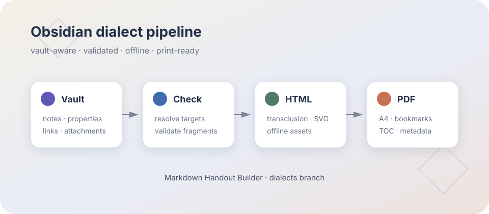
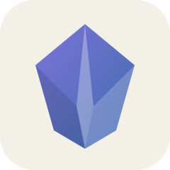

Obsidian Markdown
静态语法全覆盖 · HTML / PDF Showcase
2026.07.10
dialects preview
01 · 从这里开始这是一份由当前项目中的 CommonMark GFM Obsidian extensions Offline assets A4 PDF Properties / frontmatter本页顶部展示了 YAML properties：文本、列表、数字、布尔值、日期、标签、 方言为显式启用 默认模式仍保持严格、可移植的 Markdown；本成品通过 基础内联格式粗体、斜体、粗斜体、粗体中的 嵌套斜体、 反斜杠可转义 Markdown：*这些星号保持可见*，而 普通 URL 会自动链接：https://obsidian.md ，标准链接也可用：Obsidian Help。 段落、换行与分隔线单个换行遵循 Markdown 的软换行规则。 这一行仍属于同一段。 行尾两个空格会产生硬换行。 分隔线之后是普通引用：
标题层级Heading 3Heading 4Heading 5Heading 6六级 ATX 标题都会生成稳定锚点；主目录只收录一级标题，本章小目录展示到三级。 标签与注释内联标签支持 ASCII、Unicode 与嵌套形式：#showcase #工作流/发布 #obsidian_pdf。纯数字 注释前可见， 注释后仍可见。 导航
下一章会逐一展示这些链接的解析结果。 |
02 · 内部链接与块引用Obsidian 的内部链接既可以使用紧凑的 wikilink，也可以使用标准 Markdown 链接。本章的所有目标都由 vault resolver 在构建前验证。 Note links 与 aliases
Heading links
Local Heading这个标题是同页 Block links简单段落可在行尾定义人类可读的块 ID；标识符本身在阅读视图和 PDF 中隐藏。 结构化内容使用独立的块标识符：
这个完整列表可通过 本地列表块 定位。 Forward links 与稳定锚点链接可以指向尚未渲染的后续章节。构建器完成全部章节后统一回填锚点，因此 前向层级链接 仍能得到正确目的地。 解析策略 精确 vault 路径优先，其次是相对当前笔记的路径，最后按最近目录解析文件名与 alias；歧义会在 |
03 · 任务与 CalloutsTask listsObsidian 允许方括号内使用任意字符表示自定义任务状态；静态 PDF 将它们渲染为不可编辑但语义清晰的复选框。
嵌套任务可以和普通列表混合：
官方 Callout 类型目录Note Abstract / Summary / TLDR Info Todo Tip / Hint / Important Success / Check / Done Question / Help / FAQ Warning / Caution / Attention Failure / Fail / Missing Danger / Error Bug Example Quote / Cite Custom type 自定义标题与 Markdown 正文自定义标题：内容可组合 Callout 正文支持 粗体、高亮、列表、wikilinks 和嵌入语法。
折叠状态默认展开
默认折叠
嵌套 CalloutsCallout 可以嵌套吗？ 可以 任意层级 内层仍可使用 Markdown、#nested/tag 与 块链接。 普通 blockquote 不带
|
04 · 笔记与媒体嵌入Obsidian 使用感叹号前缀把内部链接变成嵌入。构建器会复制所有引用附件到成品目录，使 HTML 与 PDF 构建保持离线、可复现。 Image embedsWikilink 图片支持宽度与宽高：  标准 Markdown 图片同样支持 Obsidian 的  Whole-note transclusion下面整篇嵌入一个未列入 chapters 的笔记；它会被递归检查，但不会额外成为手册章节。 Heading / block / list transclusion只嵌入目标标题区段： 只嵌入一个段落块： 只嵌入一个结构化列表： Audio embed真实 WAV 附件使用浏览器原生 controls；PDF 保留静态控件外观和附件语义。 Video embed真实 MP4 附件带宽高参数，HTML 可播放，PDF 捕获首帧： PDF embed
Canvas 与 BasesCanvas 和 Bases 是独立文件格式而不是 Markdown。静态手册将它们打包并显示为可访问文件卡片： 静态输出边界 Canvas/Bases 的交互式应用视图不会在 PDF 中伪造；文件本体被保留并可从 HTML 成品访问。 |
05 · 表格、代码、脚注与数学Tables表格支持对齐、内联格式、wikilink 与图片。表格中的 alias 分隔符需要写成
Code spans 与 fenced codeInline code 保留字面量： 未知语言会安全回退为转义后的普通代码块： Footnotes命名脚注与数字脚注都会按章节命名空间化。这里引用一个脚注。[1] Inline footnote 不需要单独定义。[2] Math / LaTeX行内公式：，矩阵：。 块公式使用 KaTeX，并保留作者手写的公式编号：
Raw HTMLObsidian 方言允许可信 Raw HTML；Markdown 不会在 HTML 元素内部二次解析，这与 Obsidian 行为一致。 Trusted HTML details这里的 Lists 与 escaping
|
06 · Mermaid 与静态边界Flowchart + internal-linkMermaid 在 HTML 中离线转换为 SVG；PDF 管线会等待图表完成后再分页。带 flowchart LR A["Start Here"] --> B["Tasks and Callouts"] B --> C["Embeds and Media"] C --> D["Reference Library"] class A,B,C,D internal-link; click A href "#01-从这里开始" "Start Here" _self click B href "#03-任务与-callouts" "Tasks and Callouts" _self click C href "#04-笔记与媒体嵌入" "Embeds and Media" _self click D href "#07-reference-library" "Reference Library" _self Sequence diagramsequenceDiagram participant V as Vault participant C as mhb check participant H as HTML participant P as PDF V->>C: Markdown + attachments C->>H: resolved dialect tokens H->>P: rendered SVG + print CSS P-->>V: portable showcase Search query fenceObsidian Search 是 core plugin 的动态能力，不属于 Obsidian Flavored Markdown 扩展表。Showcase 保留其源码，但不会伪造实时搜索结果： Dataview fenceDataview 是社区插件语言，同样只作为代码展示： 覆盖边界
Coverage statement: 本成品覆盖 Obsidian Flavored Markdown 官方扩展表以及 properties、tags、Mermaid 和官方附件类型；应用级动态行为被明确标注，而不是模拟。 |
07 · Reference Library本章是 wikilink、heading link、block reference、note embed 与 Mermaid internal-link 的统一目标。 Canonical Heading“静态”并不意味着“丢失语义”：链接目标、标题层级、块锚点、属性与附件关系都在构建时被解析并验证。 Nested Section层级标题链接 Deep Anchor更深层标题仍然有稳定 ID，并可用于标准 Markdown fragment。 Block Reference Targets这是一条带人类可读 ID 的事实段落：Obsidian Markdown 是 CommonMark、GFM、LaTeX 与 Obsidian 扩展的组合。 结构化列表通过独立标识符成为可嵌入块：
Backlinks in content
End-to-end 如果你正在阅读这份 PDF，说明 properties、链接解析、transclusion、代码高亮、KaTeX、Mermaid、附件复制、Chromium 打印和 PDF 后处理已共同完成。 |